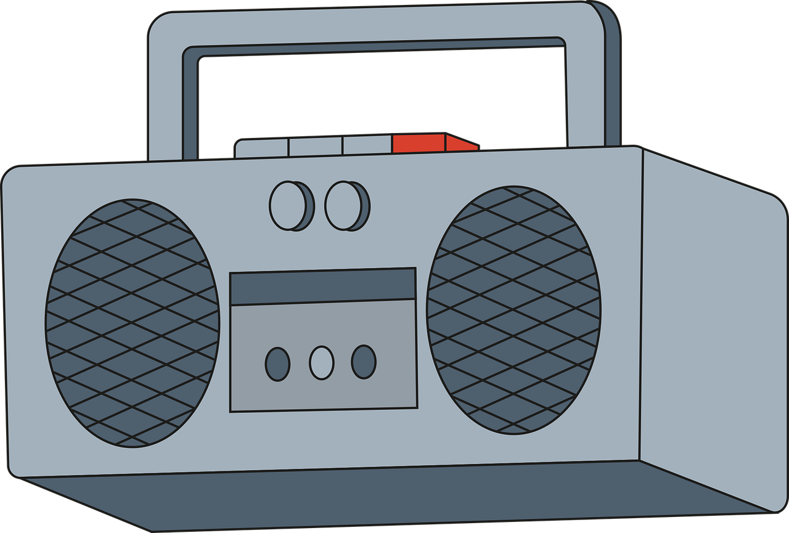
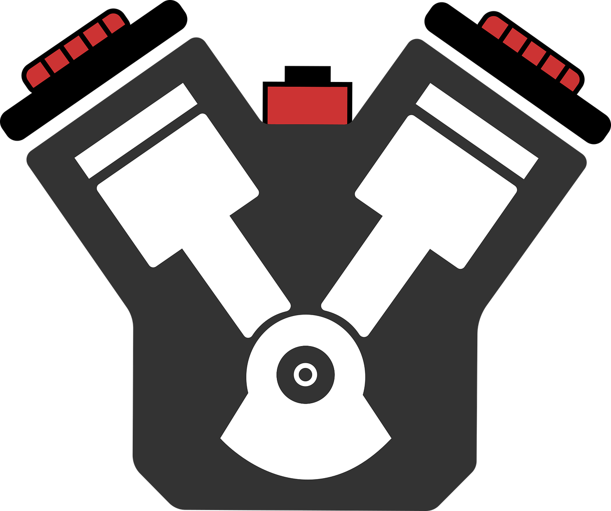
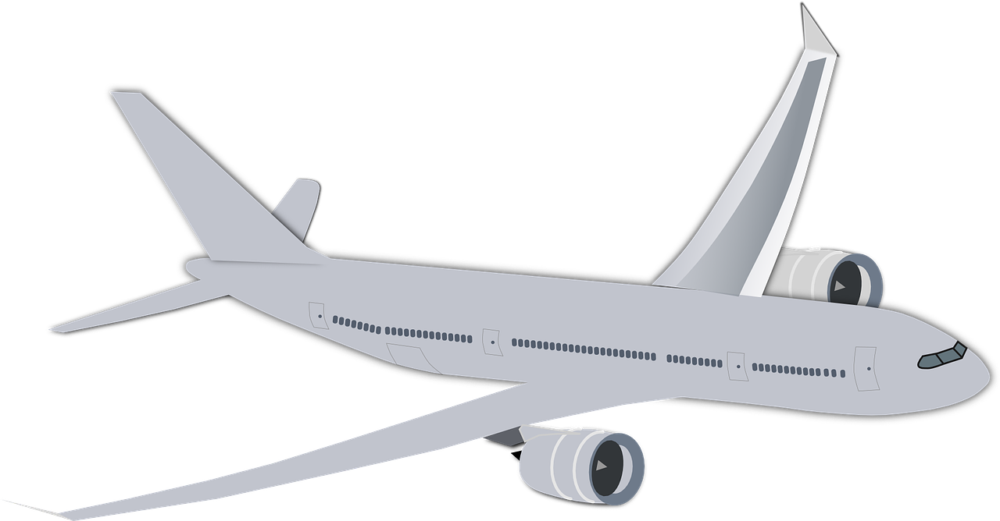

Żarówka
| Komponenty: | Funkcje: |
| Żarnik | Żarzy się tworząc światło |
| Gazy szlachetne / próżnia | Chroni żarnik przed parowaniem / spaleniem |
| Szkło | Chroni żarówkę przed uszkodzeniem |
| Gwint | Łączy żarówkę ze źródłem prądu |
Żarówkę wynalazł i zaprezentował publiczności w 1879 r. Thomas Alva Edison. Pierwsze żarówki miały skrętkę zbudowaną z włókna węglowego, które uzyskiwano ze zwęglonego włókna drewna bambusowego. Skuteczność żarówek pod koniec XIX w. wynosiła 2 lm/W przy trwałości około 600 godzin świecenia. Mimo że dzisiejsza 100-watowa żarówka ma wydajność siedmiokrotnie wyższą i świeci średnio przez 1000 godzin, nadal nie można jej nazwać wydajnym źródłem światła, ponieważ pochłania bardzo dużo energii i jedynie niewielką jej część (2–5%) przekształca w światło. Reszta pobranej energii elektrycznej uwalniana jest w postaci ciepła.
Lampa żarowa, zwana potocznie żarówką jest jednym z najstarszych elektrycznych źródeł światła. Żarówki z racji swej prostoty i łatwości użycia można znaleźć praktycznie w każdym miejscu na świecie. Są powszechnie stosowane do ogólnych celów oświetleniowych w gospodarstwach domowych oraz oświetleniu dekoracyjnym. Biorąc pod uwagę liczbę punktów świetlnych, w których świecą żarówki oraz mnogość jej odmian okazuje się, że jest nadal ona najpopularniejszym źródłem światła sztucznego, jakie używa człowiek. Jest jednak systematycznie wypierana przez nowe generacje bardziej efektywnych energetycznie źródeł światła.
Typy żarówek:
- Żarowa
- Ledowa
- Halogenowa
- Świetlówka
Radio
| Komponenty: | Funkcje: |
| Antena | Wytwarza siłę elektromotoryczną |
| Detektor (demodulator) | Z fal radiowych wydziela sygnał akustyczny |
| Wzmacniacz elektroakustyczny | Wzmacnia sygnał akustyczny |
| Obwód rezonansowy LC | Umożliwia selekcję sygnału wielkiej częstotliwości. |
| Przetwornik elektroakustyczny | Zamienia sygnał akustyczny na dźwięki |
Wynalazcą radia jest Nikola Tesla. Tesla opracował konstrukcję cewki wysokonapięciowej, wysyłającej silne fale elektromagnetyczne i zaczął pracować nad urządzeniem, które mogłoby te fale odbierać. Jego patent na urządzenie do przesyłania i odbioru fal elektromagnetycznych był gotowy w 1900 roku, jednak ubiegł go w tym o kilka dni Marconi. Tesla walczył z Marconim o patent na radio. Ostatecznie odwołanie Nikoli Tesli w sprawie patentu na radio do sądu najwyższego USA zostało wygrane już po jego śmierci w 1943 roku.
Podstawowymi elementami są: detektor, wzmacniacz małej, dużej i pośredniej częstotliwości, mieszacz z heterodyną oraz ogranicznik. Podobnie jest z zasadą działania. Umieszczona w urządzeniu antena pobiera fale radiowe o wysokiej częstotliwości. Są one strojone, a następnie sygnał połączony jest do wejścia mieszacza i lokalnego generatora. Przy wyjściu z mieszacza ujednolicana jest częstotliwość pośrednia, a następnie wzmacniana i przesyłana przez detektor. Dokonuje on jej zmiany na falę akustyczną o niskiej częstotliwości. Sygnał akustyczny przechodzi przez wzmacniacz częstości. Na samym końcu znajduje się przetwornik elektroakustyczny.Zazwyczaj jest to głośnik, lub słuchawki.
Rodzaje radia:
- Cyfrowo-analogowe
- Internetowe
- Cyfrowe
- Analogowe
- Krótkofalowe
Silnik spalinowy
| Komponenty: | Funkcje: |
| Tłok | Przekazują wytworząną energię |
| Cylinder | W nim znajduje się tłok |
| Miska olejowa | Zawiera olej do smarowania tłoków |
| Zawory dolotowe | Doprowadzają powietrze lub odprowadzają spaliny z silnika |
| Głowica | Pracują w niej wałki rozrządu, sterujące pracą zaworów dolotowych |
W 1876 roku, niemiecki samouk - wynalazca Nikolaus Otto skonstruował pierwszy, czterosuwowy silnik spalinowy, co zapoczątkowało erę samochodu. Również dzięki temu wynalazkowi człowiek po raz pierwszy zdołał wzbić się w powietrze samolotem. Od tej chwili nastąpił szybki rozwój silników różnego typu. W latach 1878-79, Carl Benz skonstruował pierwszy silnik spalinowy benzynowy dwusuwowy, natomiast w roku 1893 Rudolf Diesel opatentował pierwszy silnik spalinowy o zapłonie samoczynnym.
Aby powstała praca, tłok musi się trochę napracować i wykonać aż cztery ruchy w cylindrze – początkowo zasysa on powietrze lub mieszankę przez otwarty zawór ssący, zsuwając się na sam dół cylindra. Jak już tam sobie siedzi na dnie cylindra wypełnionego powietrzem, zawór się zamyka. Kiedy cylinder jest wypełniony powietrzem „po zęby”, tłok ściska je mocno, podnosząc się do góry. Do tak sprężonego powietrza przez wtryskiwacz od góry dostaje się paliwo (w dieslu) lub następuje iskra, która powoduje wybuch. Jak jest eksplozja to musi być i porządne walnięcie – siłą rzeczy tłok, chce czy nie, spada w dół. Jak eksplozja i walnięcie, to i dym, bo nie ma dymu bez ognia! Jak już więc tłok ogarnie się po wszystkim, to robi kolejny ruch (suw) w górę. Tam już czeka na niego otwarty zawór wylotowy, przez który tłok wypycha całe to niepotrzebne dziadostwo na zewnątrz.
Śilniki spalinowe mogą być:
- Spalania otwartego
- Spalania zamkniętego
- Wolnossące
- Doładowane
Są też silniki:
- Elektryczne
- Stirlinga
- Turbowałowe
- Hybrydowe
Samolot
| Komponenty: | Funkcje: |
| Skrzydło | Pozwala samolotowi się unieść |
| Silnik | Napędza samolot |
| Kokpit | W nim steruje się samolotem |
| Podwozie | Dzięki niemu samolot może lądować |
| Kadłub | Łączy wszystkie części samolotu |
W 1903 roku dwaj amerykanie, bracia Wright – Orville i Wilbur, wznieśli się w powietrze skonstruowaną przez siebie maszyną napędzaną silnikiem spalinowym. Wydarzenie uznawane jest za pierwszy w historii ludzkości lot samolotem. Lot trwał 12 sekund. Na początku wieku Henri Coandă rozpoczął prace nad budową silnika odrzutowego. W 1910 roku rumuński inżynier zaprezentował samolot odrzutowy, ale podczas oblatywania doszło do katastrofy. Coandă zarzucił pomysł. Pierwszą działającą tego typu maszyną był niemiecki Heinkel He 178, który testowano już w 1939 roku. Wkrótce później swoje maszyny zaczęli produkować Amerykanie i Brytyjczycy.
Aby samolot uniósł się w powietrze musi działać siła zwrócona do góry, zwana siła nośną, która przezwycięża siłę ciężkości. Gdy samolot napędzany silnikiem porusza się z dużą prędkością to zgodnie z zasadą względności ruchu powietrze przesuwa się w przeciwną stronę. Siła nośna powstaje na skutek ruchu powietrza względem odpowiednio wyprofilowanych skrzydeł samolotu, nachylonych względem kierunku lotu pod pewnym kątem zwanym kątem natarcia. Drugi czynnik związany jest z opływem powietrza z obu stron skrzydeł. Przepływające powietrze dzieli się na dwa strumienie, z których jeden przepływa nad skrzydłem samolotu, a drugi pod nim. Powietrze, które otacza skrzydło od góry przebywa dłuższą drogę, porusza się więc z większą prędkością niż powietrze z dołu. Duża szybkość powietrza nad skrzydłem powoduje wzrost ciśnienia dynamicznego w wyniku czego ciśnienie statyczne jest mniejsze niż pod skrzydłem. Skrzydło może wylecieć do góry.
Rodzaje samolotów:
- Pasażerski
- Odrzutowy
- Jednosilnikowy
- Akrobatyczny
- Wojskowy
- Towarowy
- Szybowiec
- Turbośmigłowiec
Komputer

| Komponenty: | Funkcje: |
| Procesor | Wykonuje różne operacje |
| Płyta główna | Łączy wszystkie komponenty ze sobą |
| Dyski pamięci | Przechowuje dane |
| Pamięć RAM | Szybka chwilowa pamięć potrzebna do obliczania operacji |
| Karta gaficzna | Generuje obraz |
| Ekran | Wyżwietla obraz |
| Obudowa | Chroni elementy przed uszkodzeniem |
ENIAC (Electronic Numerical Integrator And Computer) został zaprojektowany w 1945 roku, przez J.P. Eckerta i J.W. Mauchly’ego z University of Pennsylvania's Moore School of Electical Engineering. Publicznie zaprezentowano go jednak dopiero w lutym 1946 roku na Princeton University. ENIAC pracował z „rekordowym” taktowaniem 0,1 MHz, za co odpowiadało ponad 70 tysięcy rezystorów, 10 tysięcy kondensatorów, 1 500 przekaźników, 6 tysięcy ręcznych przełączników oraz 5 mln połączeń lutowanych. Produkcja ENIACa pochłonęła ponad 6 mln dolarów.
Każdy komputer wykonuje cztery podstawowe operacje: pobiera dane, przechowuje i przetwarza oraz wyprowadza. Za każdą z tych operacji odpowiada inny blok urządzenia. Informacje składowane są w pamięci komputera, przetwarzane przez procesory i prezentowane na zewnątrz np. w formie wizualnej, dzięki monitorom czy ekranom smartfonów, lub dźwiękowej, za pośrednictwem głośników.
Rodzaje komputerów:
- PC/Mac
- Desktop
- Palmtop/PDA
- Superkomputer
- Laptop/notebook, ultrabook
- Netbook
- All-in-one
- Serwer
- Stacja robocza
Telefon komórkowy
| Komponenty: | Funkcje: |
| Wyświetlacz | Wyświetla obrazy |
| Bateria | Umożliwia bezprzewodową pracę telefonu |
| Aparat | Umożliwia robienie zdjęć |
| Płyta główna telefonu | Łączy wszyskie komponenty |
| Obudowa | Chroni przed uszkodzeniami |
Komunikacja komórkowa opiera się na ogólnej zasadzie telefonii: połączeniu dwóch oddalonych od siebie użytkowników poprzez urządzenia sieciowe operatora odpowiedzialnego za zarządzanie usługą. Jednak w przeciwieństwie do telefonów stacjonarnych, w przypadku sieci komórkowej sygnał nie jest przenoszony za pośrednictwem przewodów miedzianych lub światłowodu, ale przez fale radiowe. Telefon komórkowy użytkownika komunikuje się drogą radiową z anteną stacji bazowej, która z kolei przesyła informacje do centrali operatora — komputera. W ten sposób sygnał przekazywany jest dalej do odpowiedniego użytkownika telefonu stacjonarnego lub za pośrednictwem innych stacji bazowych.
Użytkownik telefonu komórkowego musi znajdować się w obszarze zasięgu stacji bazowych, aby mieć możliwość komunikacji. Stacje bazowe mają ograniczony zasięg i obsługują wyłącznie niewielki obszar wokół siebie zwany „komórką” (stąd nazwa — „sieć komórkowa”). Aby obsłużyć możliwie największy obszar i zapewnić użytkownikowi stałą możliwość wykonywania połączeń, operatorzy wykorzystują tysiące komórek, z których każda wyposażona jest w anteny, przez co zasięgi poszczególnych komórek częściowo zachodzą na siebie, a użytkownicy zawsze znajdują się w ich zasięgu.
Inne typy telefonów:
- Smartfony
- Stacjonarne
- Satelitarne
- Krótkofalowe
Internet
| Elementy: | Funkcje: |
| Adres IP | Adres przydzielany komputerowi lub serwerowi |
| Serwer | Przechowuje i udostępnia dane |
| Komputer | Łączy się z innymi urządzeniami korzystając z adresów IP |
Koncepcję stworzenia sieci komputerów jako pierwszy opisał Joseph Licklider, pracownik amerykańskiej organizacji badawczej ARPA. W notatkach z 1963 r. wyjaśnił on, w jaki sposób ta sieć powinna funkcjonować. W tamtym czasie miała ona zostać utworzona między amerykańskimi uniwersytetami, przygotowującymi się na okoliczność wybuchu III wojny światowej. Wizja Licklidera zakładała jednak znacznie rozleglejsze połączenia. To rozwiązanie polegające na zorganizowaniu komunikatów w cyfrowe pakiety. Znając swój adres, pakiety podróżują w sieci i same trafiają do celu. Swoją koncepcję naukowiec wyjaśniał w pismach z 1961 r. za pomocą określenia „zasada gorącego kartofla”.
Węzeł sieci wysyłał otrzymane dane do najbliższego adresu. W razie niedostępności adresu lub po prostu przeciążenia – kartofel trafia do innego węzła i staje się jego zmartwieniem, itd., aż pakiet danych dotrze ostatecznie do adresata okrężną drogą.
W 1991 r. Tim Berners-Lee zaproponował projekt bazy danych i systemu informacyjnego opartego na dokumentach tekstowych z aktywnymi odnośnikami (hiperłączami). Tak powstały strony WWW, które stały się najważniejszą usługą w sieci.Pierwszą prawdziwą wyszukiwarką internetową był uruchomiony w 1994 r. Lycos. Najpopularniejsza w tej chwili wyszukiwarka, czyli Google, zadebiutowała w 1998 r.
Najpopularniejsze przeglądarki internetowe
- Chrome
- Safari
- Firefox
- Edge
- Samsung Internet
- Opera